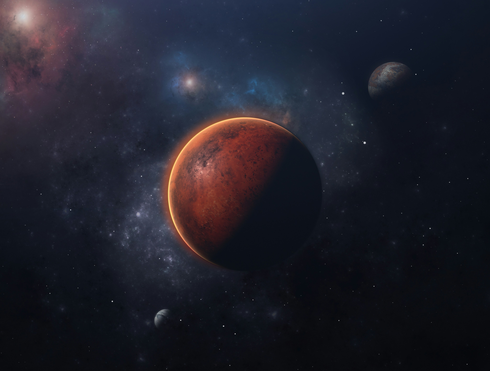
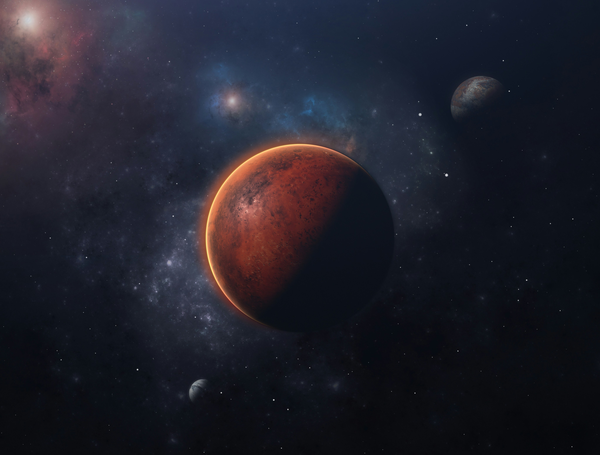
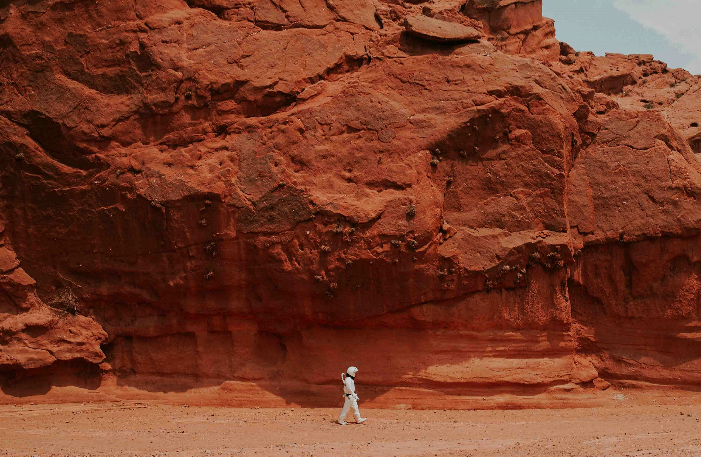
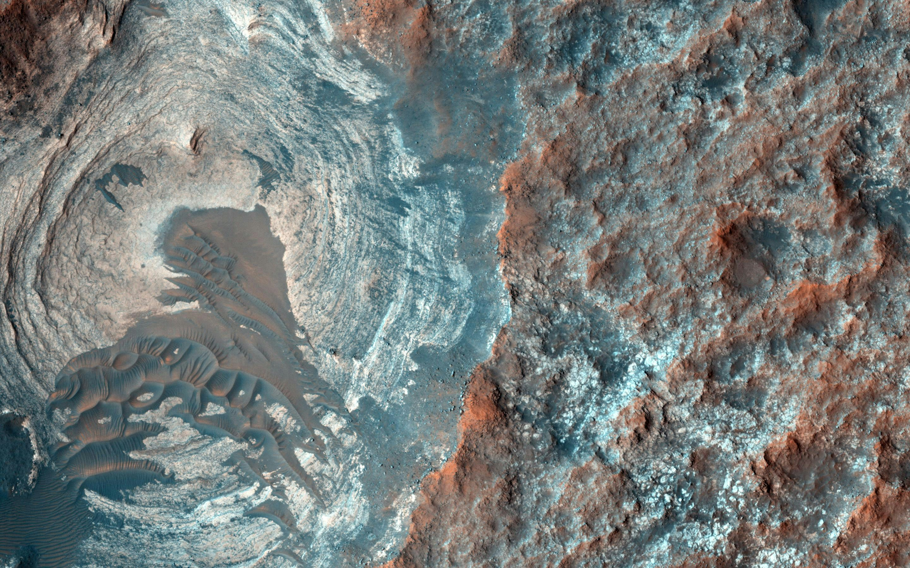
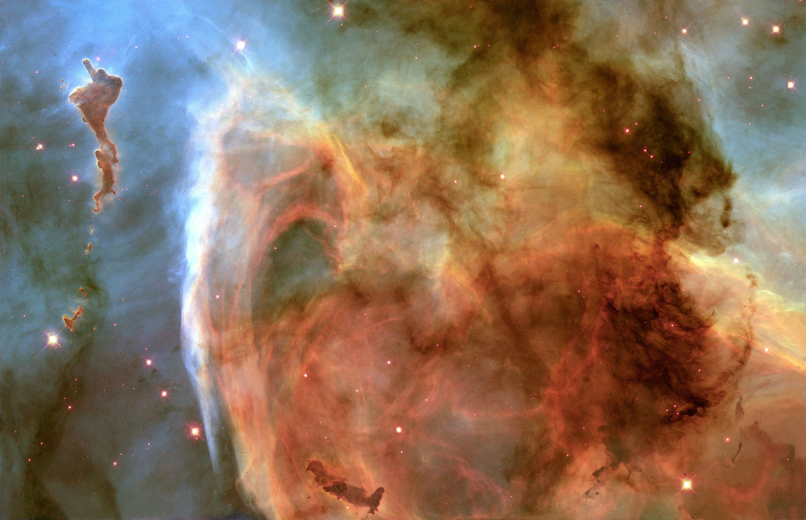
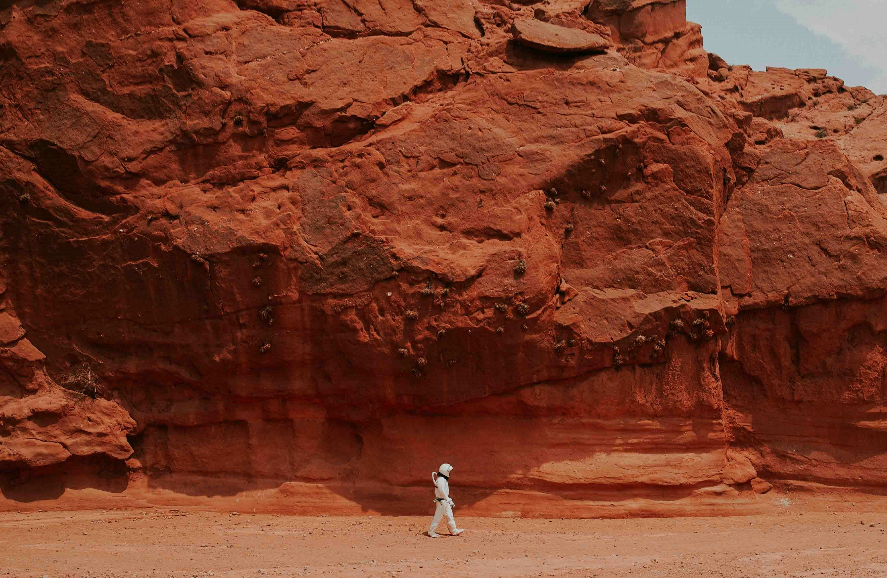
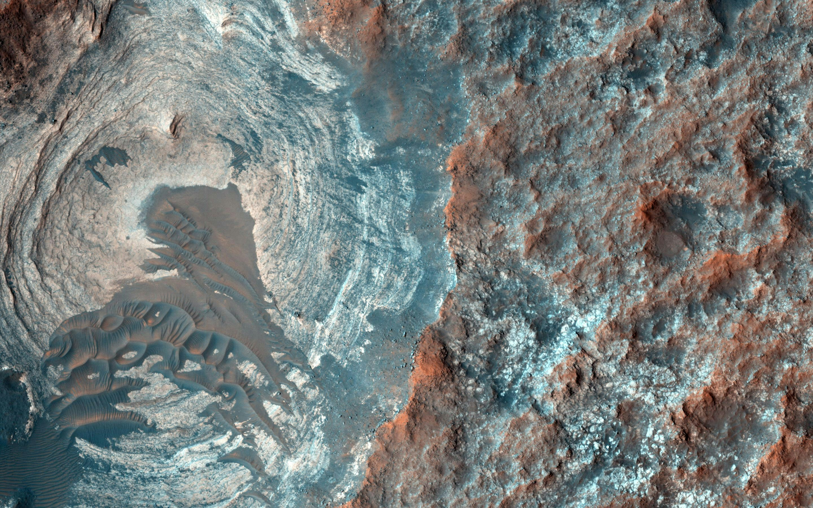
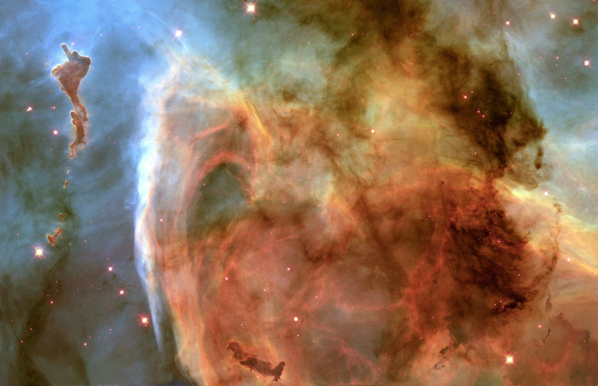

Mission to mars started
Mars – the fourth planet from the Sun – is a dusty, cold, desert world with a very thin atmosphere. This dynamic planet has seasons, polar ice caps, extinct volcanoes, canyons and weather.

Gallery
 

 





Information about Mars
- Mars, a well-explored celestial body, has seen numerous missions by NASA, deploying rovers to study its landscape. Billions of years ago, Mars possessed a wetter and warmer climate with a thicker atmosphere.
- The Romans named Mars after their god of war due to its distinctive reddish hue, reminiscent of blood. The Egyptians referred to it as "Her Desher," translating to "the red one."
- The red appearance of Mars is attributed to the oxidation of iron minerals in its soil. With a radius of 3,390 kilometers, Mars is approximately half the size of Earth.
- Positioned 228 million kilometers from the Sun (1.5 AU), sunlight takes about 13 minutes to travel from the Sun to Mars.